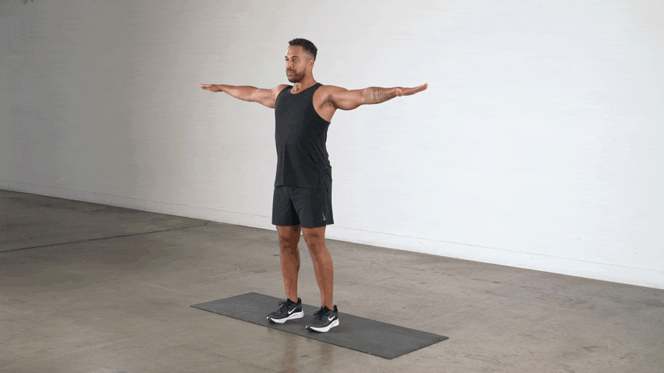

Arms Stretching
Discover different routines to improve your arm flexibility.


Legs Stretching
Explore a variety of leg stretches to keep you mobile.


Back Stretching
Learn effective back stretches to ease tension.